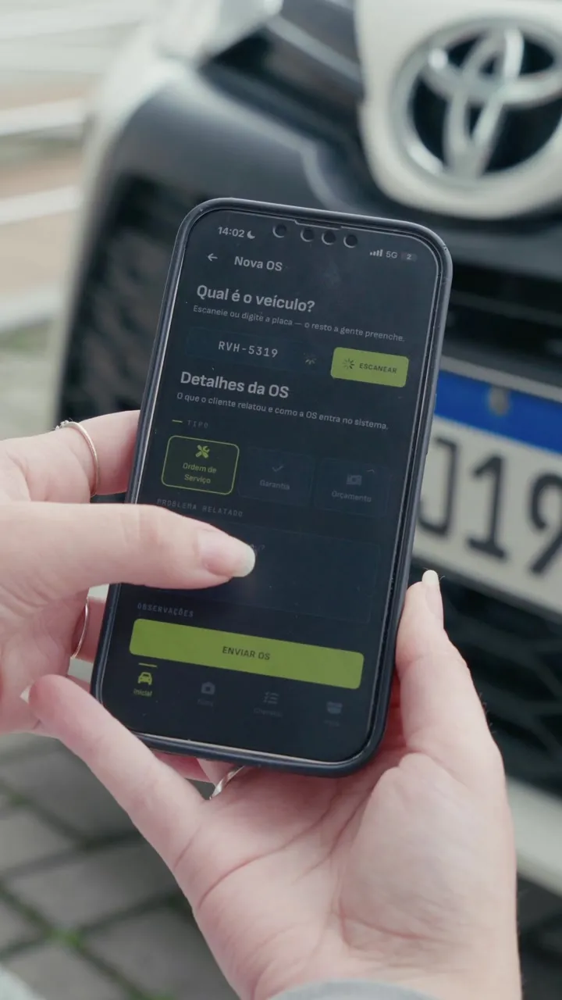

App Eixo
Aponte o celular para a placa. A OS está aberta.
Seu mecânico abre a ordem de serviço, tira fotos e vídeos, faz o checklist e manda para assinatura — tudo pelo celular. Sem sinal no pátio? Ele trabalha offline e sincroniza depois.
- Leitura de placa pela câmera
- Fotos e vídeos anexados à OS
- Funciona sem internet